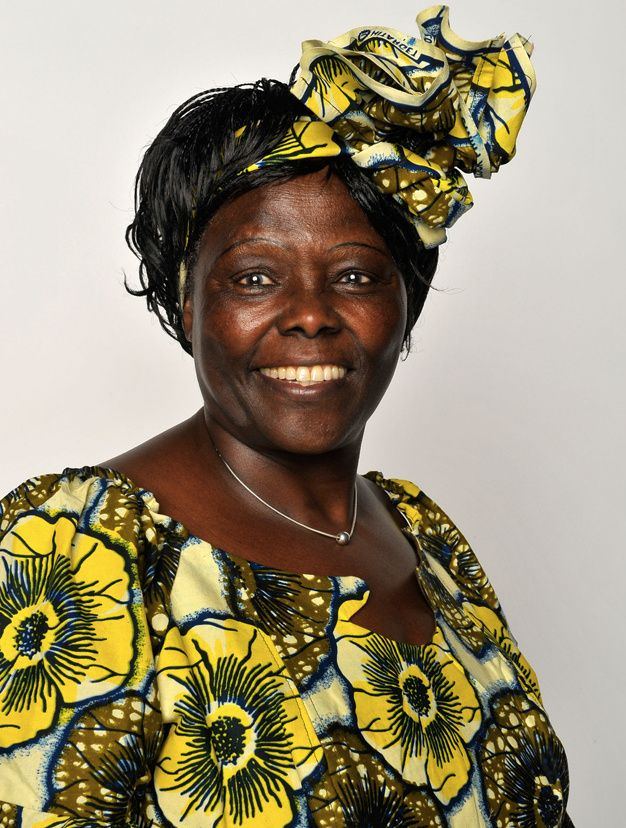
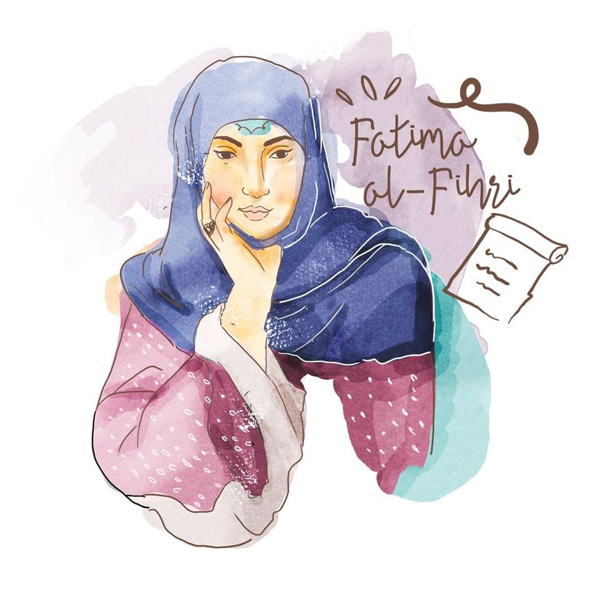
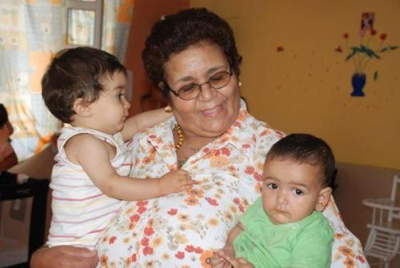
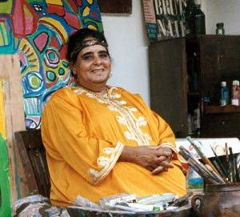

<!DOCTYPE html>
<html>
    <head>
        <link rel="stylesheet" href="styleshonor.css">
        <script src="https://kit.fontawesome.com/ec2b6f283f.js" crossorigin="anonymous"></script>
    </head>
</html>
<header>
    <div class="header">
        <a href="" class="S1"><h3>Shop</h3><i class="fa-solid fa-shop fa-bounce" style="color: #bb0755b1;"></i></a>
        <a href="file:///C:/Users/Dell/OneDrive/Bureau/final%20project/Blog.html"><h3>Blog</h3><i class="fa-solid fa-blog fa-bounce" style="color: #bb0755d0;"></i></a>
        <a href="file:///C:/Users/Dell/OneDrive/Bureau/final%20project/Contact.html"><h3>Contact</h3><i class="fa-solid fa-address-book fa-bounce" style="color: #bb0755d1;"></i></a>
        <a href="file:///C:/Users/Dell/OneDrive/Bureau/final%20project/honor.html"><h3>Honor</h3><i class="fa-solid fa-award fa-bounce" style="color: #bb0755d2;"></i></a>
        <a href="file:///C:/Users/Dell/OneDrive/Bureau/final%20project/Activities.html"><h3>Activities</h3><i class="fa-solid fa-chart-line fa-bounce" style="color: #bb0755d1;"></i></a>
    </div>
    <div class="heart"></div>
</header>
<a href="file:///C:/Users/Dell/OneDrive/Bureau/final%20project/Index.html"></a>

<body>
  <button onclick="topFunction()" id="myBtn" title="Go to top">Top</button>
  <script>
    let mybutton = document.getElementById("myBtn");
    
    window.onscroll = function() {scrollFunction()};
    
    function scrollFunction() {
      if (document.body.scrollTop > 20 || document.documentElement.scrollTop > 20) {
        mybutton.style.display = "block";
      } else {
        mybutton.style.display = "none";
      }
    }
    
    function topFunction() {
      document.body.scrollTop = 0;
      document.documentElement.scrollTop = 0;
    }
    </script>

    <div class="container">
      
      <div class="overlay">
        <div class="text">Let me tell you about Marie Curie, an incredible woman who made groundbreaking contributions to science.<br> Marie Curie was a Polish-born physicist and chemist who became the first woman to win a Nobel Prize<br> and the only person to win Nobel Prizes in two different scientific fields.<br> Her pioneering research on radioactivity led to the discovery of two elements, polonium and radium.<br> Marie Curie's work not only revolutionized our understanding of the atom but also laid the foundation for advancements in medical treatments and radiation therapy. <br>Her dedication, perseverance, and brilliance continue to inspire generations of scientists and women around the world. <br>Marie Curie's legacy is truly extraordinary.</div>
      </div>
    </div>
    <div class="container">
      
      <div class="overlay2">
        <div class="text">Let's talk about Wangari Muta Maathai, an extraordinary woman from Kenya.<BR> Wangari Maathai was an environmental and political activist who dedicated her life to promoting sustainable development, democracy, and women's rights.<br> She founded the Green Belt Movement, an organization that focused on planting trees to combat deforestation and improve the livelihoods of rural communities.<br> Wangari Maathai's efforts earned her the distinction of being the first African woman to receive the Nobel Peace Prize.<br> Her work not only had a significant impact on the environment but also empowered women and fostered social change.<br> Wangari Maathai's legacy continues to inspire people around the world to take action and make a difference in their communitie</div>
    </div>
    </div>
    <div class="container">
        
        <div class="overlay">
          <div class="text">Let's talk about Fatima Al-Fihri, an influential figure in Islamic history.<br> Fatima Al-Fihri was a Muslim woman who lived in the 9th century. She is known for founding the University of Al-Qarawiyyin in Fes, Morocco, which is considered the oldest existing degree-granting university in the world.<br> Fatima Al-Fihri's vision and dedication to education have had a lasting impact, not only in Morocco but also in the broader Islamic world.<br> Her legacy serves as an inspiration for women and emphasizes the importance of knowledge and learning in society.</div>
    </div>
    </div>
    <div class="container">
            
            <div class="overlay2">
              <div class="text">Let me tell you about Aicha Chenna, a remarkable woman from Morocco.<br> Aicha Chenna is a well-known social activist and the founder of the Association Solidarité Féminine.<br> She has dedicated her life to supporting and empowering single mothers in Morocco, providing them with shelter, education, and vocational training. <br>Aicha Chenna's tireless efforts have made a significant impact on the lives of countless women, helping them overcome challenges and build a better future for themselves and their families. <br>Her work is truly inspiring and serves as a shining example of compassion and resilience.</div>
    </div>
    </div>
    <div class="container">
        
        <div class="overlay">
          <div class="text">Let's talk about Chaibia Talal, an amazing Moroccan artist.<br> Chaibia Talal was a self-taught painter who gained recognition for her unique and vibrant art.<br> Her style was characterized by bold colors, simplified forms, and a fusion of Moroccan and European influences.<br> Chaibia Talal's artwork often depicted scenes from everyday life, showcasing the beauty and richness of Moroccan culture.<br> Despite facing many challenges as a female artist in a male-dominated field, she persevered and became a celebrated figure in the art world.<br> Her work continues to inspire and captivate audiences, leaving a lasting impact on the Moroccan art scene.</div>
    </div>
    </div>
    </body>
    <footer>
        <h4>© 2023 Ichraq's project</h4>
    </footer>